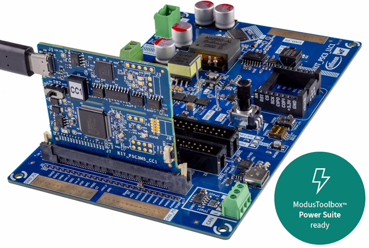

|
ModusToolbox Power Suite LLC Resonant Power Converter Reference Code Example 1.0.0.538
|

|
|
ModusToolbox Power Suite LLC Resonant Power Converter Reference Code Example 1.0.0.538
|
|
This code example demonstrates how to use the ModusToolbox™ Power Suite LLC Middleware to build the LLC power converter.
Note: This code example involves control of the power conversion circuit. Follow all safety precautions described in the kit user guide. This code example is intended for demonstration and learning purposes only, and is not designed for industrial use.
GCC_ARM) – Default value of TOOLCHAINKIT-PSC3M5-CC1) – Default value of TARGET + Low Voltage LLC Power Board (KIT_PSC3_LLC1)
This example uses the board's default configuration. See the kit user guide to ensure that the board is configured correctly.
See the ModusToolbox™ tools package installation guide for information about installing and configuring the tools package.
The ModusToolbox™ Power Suite GUI is usually being installed separately
The ModusToolbox™ tools package provides the Project Creator as both a GUI tool and a command line tool.
Open the Project Creator GUI tool
There are several ways to do this, including launching it from the dashboard or from inside the Eclipse IDE. For more details, see the Project Creator user guide (locally available at *{ModusToolbox™ install directory}/tools_{version}/project-creator/docs/project-creator.pdf*)
Note: To use this code example for a kit not listed here, you may need to update the source files. If the kit does not have the required resources, the application may not work
On the Select Application page:
a. Select the Applications(s) Root Path and the Target IDE
Note: Depending on how you open the Project Creator tool, these fields may be pre-selected for you
b. Select this code example from the list by enabling its check box
> Note: You can narrow the list of displayed examples by typing in the filter box
c. (Optional) Change the suggested New Application Name and New BSP Name
d. Click Create to complete the application creation process
The 'project-creator-cli' tool can be used to create applications from a CLI terminal or from within batch files or shell scripts. This tool is available in the *{ModusToolbox™ install directory}/tools_{version}/project-creator/* directory.
Use a CLI terminal to invoke the 'project-creator-cli' tool. On Windows, use the command-line 'modus-shell' program provided in the ModusToolbox™ installation instead of a standard Windows command-line application. This shell provides access to all ModusToolbox™ tools. You can access it by typing "modus-shell" in the search box in the Windows menu. In Linux and macOS, you can use any terminal application.
The following example clones the "[mtb-example-pwrlib-llc](https://github.com/Infineon/mtb-example-pwrlib-llc)" application with the desired name "MyLlcApp" configured for the KIT-PSC3M5-CC1 BSP into the specified working directory, C:/mtb_projects:
The 'project-creator-cli' tool has the following arguments:
| Argument | Description | Required/optional |
|---|---|---|
--board-id | Defined in the <id> field of the BSP manifest | Required |
--app-id | Defined in the <id> field of the CE manifest | Required |
--target-dir | Specify the directory in which the application is to be created if you prefer not to use the default current working directory | Optional |
--user-app-name | Specify the name of the application if you prefer to have a name other than the example's default name | Optional |
Note: The project-creator-cli tool uses the
git cloneandmake getlibscommands to fetch the repository and import the required libraries. For details, see the "Project creator tools" section of the ModusToolbox™ tools package user guide (locally available at {ModusToolbox™ install directory}/docs_{version}/mtb_user_guide.pdf).
After the project has been created, you can open it in your preferred development environment.
If you opened the Project Creator tool from the included Eclipse IDE, the project will open in Eclipse automatically.
For more details, see the Eclipse IDE for ModusToolbox™ user guide (locally available at *{ModusToolbox™ install directory}/docs_{version}/mt_ide_user_guide.pdf*).
Launch VS Code manually, and then open the generated *{project-name}.code-workspace* file located in the project directory.
For more details, see the Visual Studio Code for ModusToolbox™ user guide (locally available at *{ModusToolbox™ install directory}/docs_{version}/mt_vscode_user_guide.pdf*).
If you prefer to use the CLI, open the appropriate terminal, and navigate to the project directory. On Windows, use the command-line 'modus-shell' program; on Linux and macOS, you can use any terminal application. From there, you can run various make commands.
For more details, see the ModusToolbox™ tools package user guide (locally available at *{ModusToolbox™ install directory}/docs_{version}/mtb_user_guide.pdf*).
Program the board using one of the following:
Follow the instructions in your preferred IDE.
From the terminal, execute the make program command to build and program the application using the default toolchain to the default target. The default toolchain is specified in the application's Makefile but you can override this value manually: make program TOOLCHAIN=<toolchain>
Example: make program TOOLCHAIN=GCC_ARM
Note: Use READ_VOUT/READ_IOUT command to refresh the Vout/Iout values
Note: OPERATION=0x00 (off) will work with any ON_OFF_CONFIG value, but OPERATION=0x80 (on) will work only with ON_OFF_CONFIG=0x9 (PMBus control)
You can debug the example to step through the code.
Note: The LLC control loops cannot be step-by-step debugged on the fly with active live power conversion – this is a real-time process.
Use the **<Application Name> Debug (JLink)** configuration in the Quick Panel. For details, see the "Program and debug" section in the Eclipse IDE for ModusToolbox™ user guide.
Follow the instructions in your preferred IDE.
This code example implements a Full-Bridge LLC power converter using the ModusToolbox™ Power Suite LLC Middleware. The application configures the PSOC™ Control C3 MCU to drive the LLC topology with closed-loop voltage regulation.
Table 1. Application resources
| Resource | Alias/object | Purpose |
|---|---|---|
| TCPWM (HRPWM) | LLC_DRV0 | Primary half-bridge driver 0 (center-aligned, dead-time) |
| TCPWM (HRPWM) | LLC_DRV1 | Primary half-bridge driver 1 (center-asymmetric, dead-time) |
| TCPWM (HRPWM) | LLC_SR | Synchronous rectifier PWM driver (center-asymmetric, dead-time) |
| TCPWM (PWM) | LLC_BRST | Burst mode modulator (center-aligned) |
| TCPWM (Timer) | LLC_ISR0 | Fast control loop ISR timer |
| TCPWM (Timer) | LLC_ISR1 | Slow control loop ISR timer |
| TCPWM (Timer) | EXE_TIMER | Execution profiling timer |
| HPPASS SAR ADC | LLC_VOUT | Output voltage sensing (ch[5]) |
| HPPASS SAR ADC | LLC_IOUT | Output current sensing (ch[12]) |
| HPPASS SAR ADC | LLC_VIN | Input voltage sensing (ch[16]) |
| HPPASS SAR ADC | LLC_NTC | NTC temperature sensing (ch[7]) |
| HPPASS SAR ADC | LLC_POT | Potentiometer input (ch[6]) |
| HPPASS SAR Filter | LLC_IOUT_FLT | FIR low-pass filter on output current |
| HPPASS SAR Limit | LLC_VOUT_OV | Output overvoltage limit detector |
| HPPASS SAR Limit | LLC_VIN_OV | Input overvoltage limit detector |
| HPPASS CSG | LLC_IRES_OC | Resonant current overcurrent comparator (DAC-based) |
| HPPASS CSG | LLC_IOUT_OC | Output current overcurrent comparator (DAC-based) |
| HPPASS Trigger | LLC_PROT_TRG | Hardware protection trigger (kills PWMs on fault) |
| HPPASS Trigger | LLC_FREQ_TRIG | ADC trigger synchronized to switching frequency |
| SCB (I2C) | PMBUS_I2C | PMBus I2C slave interface (address 0x58, 100 kHz) |
| SCB (UART) | DEBUG_UART | Debug UART via retarget-io (115200 baud, 8N1) |
| GPIO | LLC_DRV0_H, LLC_DRV0_L | Half-bridge driver 0 high-side/low-side gate outputs |
| GPIO | LLC_DRV1_H, LLC_DRV1_L | Half-bridge driver 1 high-side/low-side gate outputs |
| GPIO | LLC_SR_A, LLC_SR_B | Synchronous rectifier gate outputs |
| GPIO | LLC_FAULT_LED | Fault indicator LED |
| GPIO | LLC_ACT_LED | Active/running indicator LED |
| GPIO | CYBSP_USER_LED / HRT_BT_LED | Heartbeat LED |
| GPIO | N_LLC_USER_BTN | User button input |
| EEPROM | Emulated EEPROM | Parameter storage (4096 bytes) |
| System clock | DPLL250[0], DPLL250[1] | 180 MHz (CPU), 240 MHz (HRPWM) |
The reference code example uses the following libraries:
| Resources | Links |
|---|---|
| Application notes | AN238329 – Getting started with PSOC™ Control MCU on ModusToolbox™ |
| Code examples | Using ModusToolbox™ on GitHub |
| Device documentation | PSOC™ Control datasheet |
| Development kits | Select your kits from the Evaluation board finder |
| Libraries on GitHub | mtb-hal-psc3 - Hardware Abstraction Layer (HAL) library mtb-pdl-cat1 - Peripheral Driver Library (PDL) [core-lib](https://github.com/Infineon/core-lib - Fundamental types and utilities |
| Tools | ModusToolbox™ - ModusToolbox™ software is a collection of easy-to-use libraries and tools enabling rapid development with Infineon MCUs for applications ranging from wireless and cloud-connected systems, edge AI/ML, embedded sense and control, to wired USB connectivity using PSOC™ Industrial/IoT MCUs, AIROC™ Wi-Fi and Bluetooth® connectivity devices, XMC™ Industrial MCUs, and EZ-USB™/EZ-PD™ wired connectivity controllers. ModusToolbox™ incorporates a comprehensive set of BSPs, HAL, libraries, configuration tools, and provides support for industry-standard IDEs to fast-track your embedded application development |
Infineon provides a wealth of data at www.infineon.com to help you select the right device, and quickly and effectively integrate it into your design.
| Version | Description of change |
|---|---|
| 1.0.0 | Pre-production version of reference code example |
This software is provided under the Infineon End User License Agreement (EULA). Usage is limited to Infineon hardware products. Source code modification is permitted only for development on Infineon products. See the accompanying LICENSE file for full terms.
© 2026, Infineon Technologies AG, or an affiliate of Infineon Technologies AG.